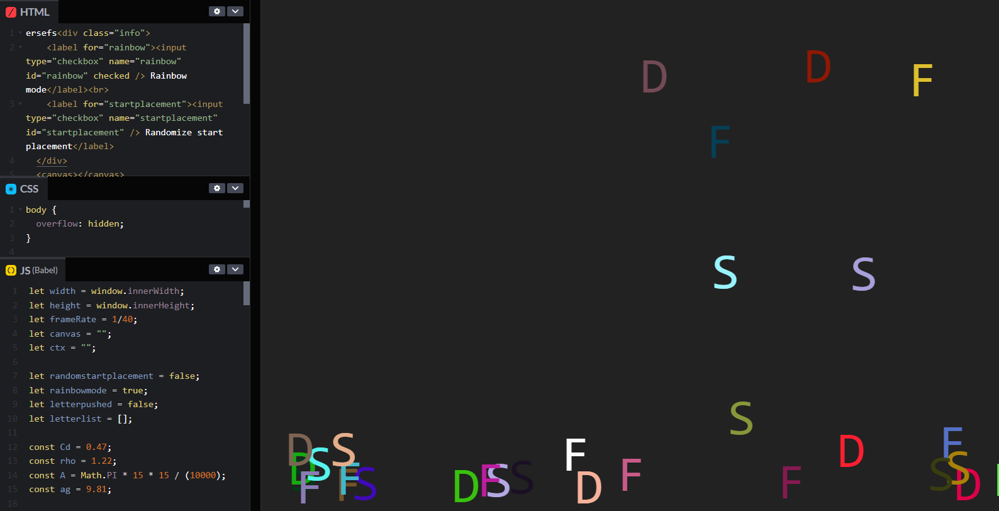
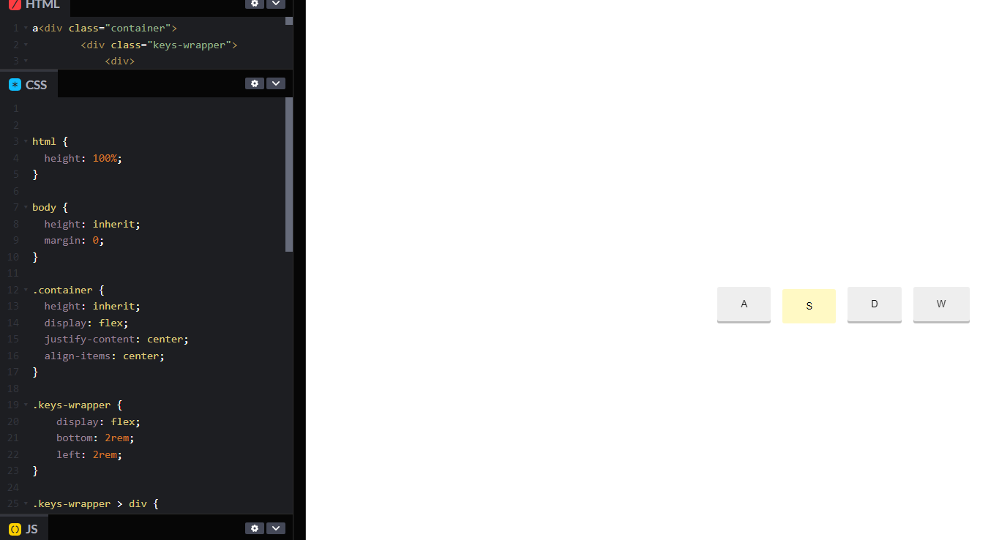

Coming up with an idea
The interaction that I was given to work with was typing with a keyboard. At first I thought that
this would be a simple interaction to work with, however I realized that coming up with a solid idea
would be difficult. I went through many different ideas and even draft coded some of them in
parts.
One idea that I think would have worked well was when you press the keyboard, that
character shoots up and bounces around. I made a draft of it and it was fully complited, however im
not sure how it even works and its a miracle that it does

The code was mostly copy and pasted and edited to fit with each other so I couldnt use it anyways. And I dont fully know how to use Matter.js and I didnt have the time to try to learn it.
I also coded a small pen on CodePen, to see if I could make somthing keys on the screen when it is pressed down. I wasnt sure how I would use it but I made it to see what I can do.

An idea I had that I really like was to use the keybpard inputs to change what was showing up on screen. You press a button and you toggle between night and day. In the day you can press keys to make elements show up to decorate the surroundings. I made clouds for the day time and stars for the night time. I was going to make this using P5.js. However, after talking with the prof, I decided that the best thing to make that would make you interact with the keyboard that seperates it from other input and interactive elements was the ability to type out words. So I decided to make a chatbox that will annoy you.
Creating the chatbot
I decided that rather than using the template that was provided to draw out letters in, I made one myself. It's also responsive to window resizing. Im quite happy with out it turned out. Drawing the typography in CSS was pretty easy. I decided to use the grid template method we learned from that carrot planting grid game. After drawing out a few letters, I started to get tired from going back to refresh the page since it was taking so long. I then started to use CodePen and colored the box I was moving blue so I can see it easily. This process was much faster.